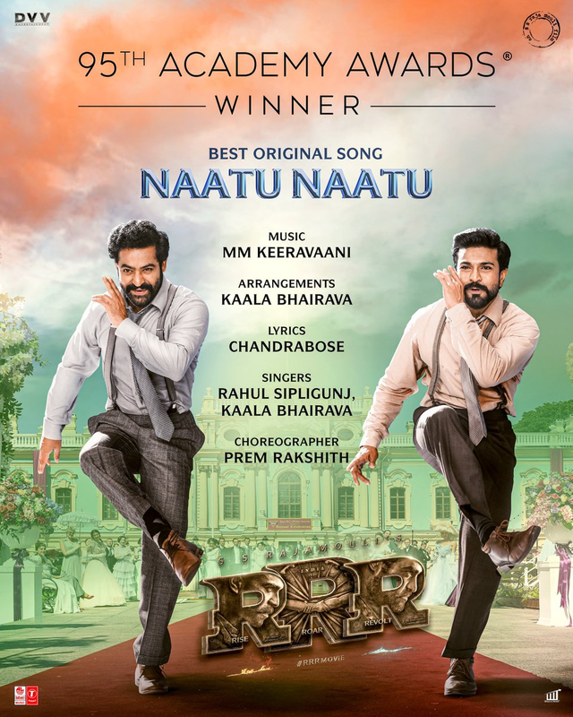
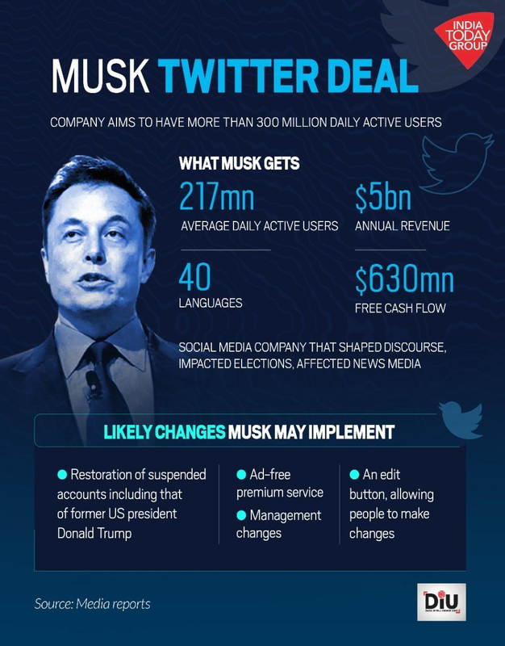
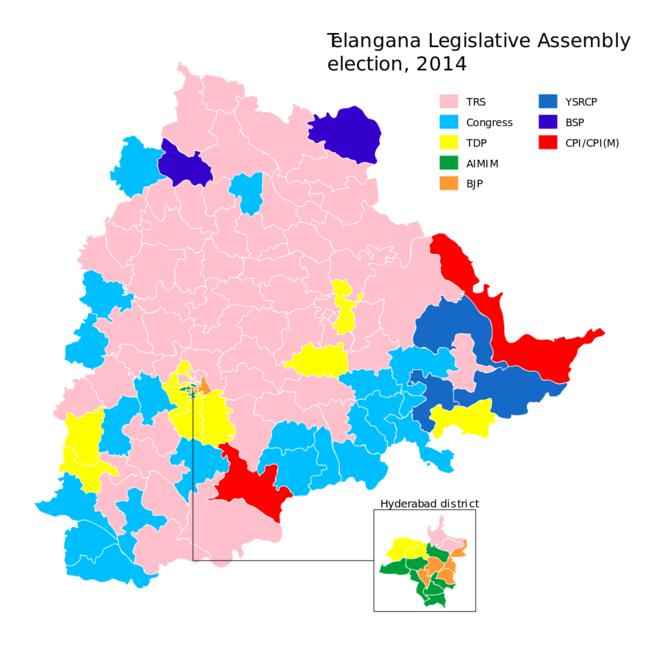

RRR wins the Oscar
on 13 march,2023//category, category4
Indians erupted in celebration on Monday after 'Naatu Naatu', the breakout hit from the action movie 'RRR', won the Academy Award for Best Original Song and 'The Elephant Whisperers', brought home the Best Documentary Short award. Producer Guneet Monga and director Kartiki Gonsalves won the Oscar in the Best Documentary Short Film category for their film 'The Elephant Whisperers'. The documentary won against 'Haul Out,' 'How Do You Measure A Year?' 'The Martha Mitchell Effect,' and 'Stranger At The Gate'. 'Naatu Naatu'- the fast-paced number from the SS Rajamouli directorial 'RRR' and starring Ram Charan and Jr NTR, added a page to the history books by becoming the Indian first song from a Telugu production to not only secure a nomination, but to also go on and win an Oscar. The offbeat, dimension-hopping adventure "Everything Everywhere All at Once" took home all the top honours, including Best Actress, Best Director, and the film industry's highest honour - Best Picture at the Academy Awards. Bollywood star Deepika Padukone made jaws drop when she took over the Oscar stage in a glamorous black gown to introduce 'Naatu Naatu', a performance featuring playback singers Kaala Bhairava and Rahul Sipligunj.

Elon Musk takes control of Twitter in $44bn deal
on 14 april,2022//category, category2
Elon Musk offered to buy Twitter for $54.20 a share in a filing published Thursday, saying the social media company needs to be transformed privately, a little over a week after revealing a 9.1% stake in the company. Musk's offer values Twitter at about $43 billion. "I invested in Twitter as I believe in its potential to be the platform for free speech around the globe, and I believe free speech is a societal imperative for a functioning democracy," Musk wrote in a letter sent to Twitter Chairman Bret Taylor and disclosed in a securities filing. Twitter shares closed down 1.68% on Thursday. Tesla's stock dipped more than 3.6% on the news. According to Musk, the social media company needs to go private because it can "neither thrive nor serve" free speech in its current state.

See More
Telangana Legislative Assembly election Results
on 30 april,2014//category, category1
General elections were held in India in nine phases from 7 April to 12 May 2014 to elect the members of the 16th Lok Sabha. With 834 million registered voters, they were the largest-ever elections in the world until being surpassed by the 2019 elections. Around 23.1 million or 2.7% of the total eligible voters were aged 18–19 years. A total of 8,251 candidates contested the 543 elected Lok Sabha seats. The average election turnout over all nine phases was around 66.40%, the highest ever in the history of Indian general elections. The results were declared on 16 May, 15 days before the 15th Lok Sabha completed its constitutional mandate on 31 May 2014. The counting exercise was held at 989 counting centres. The Bharatiya Janata Party (BJP) received 31% of the vote and won 282 seats, while its National Democratic Alliance won a total of 336 seats. The BJP's vote share was the lowest by a party winning a majority of seats since independence, However, the governing coalition had the largest majority since the 1984 elections, and it was the first time since 1984 that a party had won enough seats to govern without the support of other parties.